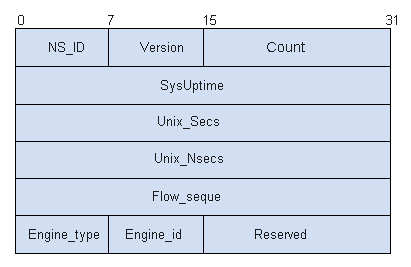
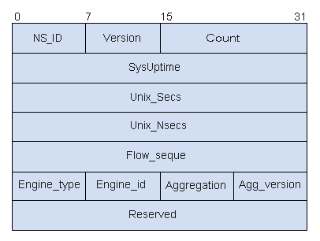
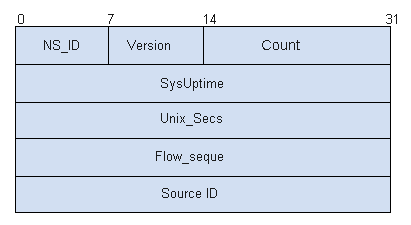
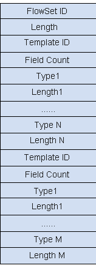

NetStream是华为公司的专利技术，是一种基于网络流信息的统计与发布技术。NetStream可以对网络中的通信量和资源使用情况进行分类和统计，实现对各种业务和不同的QoS进行管理和计费。
目前Netstream输出的报文主要有5、8、9三个版本，其他的版本处于实验阶段，没有商用。所有的版本都是通过UDP协议传递统计信息的。每个数据包都包括一个Packet Header再加上一条或者几条流的记录信息。

NetStream原始流输出报文支持版本5和版本9两种报文格式，聚合流输出支持版本8和版本9两种报文格式。
NetStream版本5报文头格式

| 字段 | 长度 | 描述 |
|---|---|---|
| NS_ID | 1字节 | NetStream的标识位，第7个比特位0，表示入接口统计报文，第7个比特位1，表示出接口统计报文 |
| version | 1字节 | NetStream输出报文格式版本编号，对于V5，为0x05。 |
| count | 2字节 | 当前报文中的流记录数（1-30） |
| SysUptime | 4字节 | 报文产生的时间，是系统启动以来的毫秒数 |
| unix_secs | 4字节 | 从1970年1月1日0时起，到报文产生时间的整秒数 |
| unix_nsecs | 4字节 | 报文产生时间的纳秒数，也即不足一秒的余下的纳秒数 |
| flow_sequence | 4字节 | 输出的流记录的顺序号在第一个NetStream报文中，此值为0，count = c1， 在第二个NetStream报文中，此值为c1，count = c2， 在第三个NetStream报文中，此值为c2 + c1， … 在第n – 1 个NetStream报文中，此值为fs(n - 1)，count = c(n - 1) 在第n个NetStream报文中，此值为fs(n - 1) + c(n - 1)。 利用此值可以判断报文是否丢失。 当流序列号溢出时，按自然溢出继续进行。 |
| engine_type | 1字节 | 流交换引擎类型 |
| engine_id | 1字节 | 交换引擎槽号 |
| reserved | 2字节 | 保留字段，全零 |
版本5包括以下信息：
- 时间信息：流建立的时间、流结束的时间
- 统计信息：包计数、字节计数
- 协议信息：协议类型
- 路由信息：目的IP、源IP、下一跳IP、目的IP掩码长度、源IP掩码长度、源AS域编号、目的AS域编号
- 接口信息：入接口、出接口
- 传输层信息：源端口号、目的端口号、TCP Flags
- 服务等级信息：ToS
NetStream版本8报文头

| 字段 | 长度 | 描述 |
|---|---|---|
| NS_ID | 1字节 | NetStream的标识位 |
| version | 1字节 | NetStream输出报文格式版本编号 |
| count | 2字节 | 当前报文中的流记录数，而不是流的总数 |
| SysUptime | 4字节 | 报文产生的时间，是系统启动以来的毫秒数 |
| unix_secs | 4字节 | 从1970年1月1日0时起，到报文产生时间的整秒数 |
| unix_nsecs | 4字节 | 报文产生时间的纳秒数，也即不足一秒的余下的纳秒数 |
| flow_sequence | 4字节 | 输出的流记录的顺序号， |
| engine_type | 1字节 | 流交换引擎类型 |
| engine_id | 1字节 | 交换引擎槽号 |
| aggregation | 1字节 | 聚合策略，分别如下：
|
| Agg_version | 1字节 | 聚合版本 |
| Reserved | 4字节 | 保留字段，全零 |
版本8通过AS域聚合，这种聚合方式主要统计在一个路由器上从一个AS域到另一个AS域的包和字节信息。可以用以运营商之间结算。每个记录包括以下信息：
- 时间信息：流建立时间、流结束时间
- 统计信息：包计数、字节计数
- 接口信息：入接口、出接口
- AS自治域信息：源AS域编号、目的AS域编号
- 构成聚合流的流总数：聚合流的总数
通过协议类型聚合，这种方式针对四层的协议类型（对于TCP和UDP，还包括源和目的端口号）进行聚合。每个记录包括：
- 时间信息：流建立时间、流结束时间
- 统计信息：包计数、字节计数
- 协议信息：协议类型、源端口号、目的端口号
- 构成聚合流的流总数：聚合流的总数
根据源IP和目的IP的前缀进行聚合，这种方式下，源IP地址的前缀部分和目的IP地址的前缀部分都参与聚合。每个记录包括：
- 时间信息：流建立时间、流结束时间
- 统计信息：包计数、字节计数
- 接口信息：入接口、出接口
- IP地址信息：源IP前缀、源AS域编号、目的IP前缀、目的AS域编号
- 构成聚合流的流总数：聚合流的总数
TOS＋AS域的方式进行流聚合，每个记录包括：
- 时间信息：流建立时间、流结束时间
- 统计信息：包计数、字节计数
- 接口信息：入接口、出接口
- ToS + AS信息：IP头的Tos、源AS域编号、目的AS域编号
- 构成聚合流的流总数：聚合流的总数
按照TOS加协议类型的聚合，每个记录包括：
- 时间信息：流建立时间、流结束时间
- 统计信息：包计数、字节计数
- 接口信息：入接口、出接口
- ToS + 协议信息：IP头的Tos、协议类型、源端口号、目的端口号
- 构成聚合流的流总数：聚合流的总数
IP地址前缀＋TOS＋协议类型的聚合，每个记录包括：
- 时间信息：流建立时间、流结束时间
- 统计信息：包计数、字节计数
- 接口信息：入接口、出接口
- IP信息：IP头的Tos、源前缀、目的前缀
- 协议信息：协议类型、源端口号、目的端口号
- 构成聚合流的流总数：聚合流的总数
TOS＋源IP前缀的聚合，每个记录包括：
- 时间信息：流建立时间、流结束时间
- 统计信息：包计数、字节计数
- ToS + 源IP信息：IP头的Tos、源前缀、源AS域编号、入接口
- 构成聚合流的流总数：聚合流的总数
TOS＋目的IP前缀的聚合（和TOS＋源IP前缀的聚合方式的方式类似），每个记录包括：
- 时间信息：流建立时间、流结束时间
- 统计信息：包计数、字节计数
- 接口信息：入接口、出接口
- ToS + 目的IP信息：IP头的Tos、目的前缀、源前缀
- 构成聚合流的流总数：聚合流的总数
版本9报头格式
版本9最显著的特点是基于模板的方式，使统计信息的输出更为灵活，而且更容易扩展新的定义流的元素以及生成新的记录。使用版本9可以实现NAT、组播、MPLS、BGP下一跳的统计。

| 字段 | 长度 | 描述 |
|---|---|---|
| NS_ID | 1字节 | NetStream的标识位 |
| version | 1字节 | NetStream输出报文格式版本编号 |
| count | 2字节 | 该报文包含的FlowSet records(包括Template和Data)数目 |
| SysUptime | 4字节 | 报文产生的时间，是系统启动以来的毫秒数 |
| UNIX Seconds | 4字节 | 从1970年1月1日0时起，到报文产生时间的整秒数 |
| Sequence Number | 4字节 | 所有输出报文的顺序号 |
| Source ID | 4字节 | 用来保证从一台路由器中输出的所有流的唯一性(Source ID等同于V5、V8报文头中的engine type和engine ID)。该值可以由用户定义。 |
版本9报文有两种输出情况：
Export Packet中仅有Template FlowSet。在用户使能NetStream功能，对流量进行采集时，为了使网管能够正确的解析流量，系统会向NSC发送模板。为了保证网管可靠的对接收到流量统计信息进行解析，设备会定时重新发送模板给NSC。另外，模板具有有效时间，超过有效时间NSC会删除超时的模板，因此，需要定时的发送Template FlowSet到NSC，如果需要发送的时候没有Data FlowSet生成，则此时只发送Template FlowSet。报文格式如下：
Export Packet中仅有Data FlowSet。如果Template ID都已经定义好了，使能NetStream的路由器传递给NSC的Export Packet一般属于这种情况。报文格式如下：
Template FlowSet和Data FlowSet是独立的。Data FlowSet中的Data Record由collector已知的模板解释（换句话说，NSC已经知道了Data Record中的Template ID对应的模板了）。而Template FlowSet是告诉NSC一个即将被使用的模板，NSC使用这个模板的时候只能是针对后续的Export Packet。
Template FlowSet是版本9的灵魂。使用模板后，NSC的程序无需预先设置好按照什么样的格式解析Export Packet，只需做成通用的方式，然后通过路由器发过来的模板来解释流记录的信息。模板极大的增强了NetStream流记录的灵活性和可扩展性，方便了第三方软件的开发，和后续NetStream功能的增强。


| 字段 | 长度 | 含义 |
|---|---|---|
| FlowSet ID | 2字节 | 用于在Export Packet中对Template FlowSet进行编号，同时区分出Template FlowSet和Data FlowSet。对于Template FlowSet，FlowSet ID的取值是0～255，对于Data FlowSet，取值从256开始，这样collector就可以在Export Packet中识别出Template FlowSet。 |
| Length | 2字节 | 用于决定下一个FlowSet的其实位置，取值是上面图中全部的字节数（包括FlowSet ID和Length自身）。 |
| Template ID | 2字节 | 为模板定义一个编号，取值从256开始，原因是0～255被FlowSet ID所用。注意一个Data FlowSet对应一个Template ID Field count表示模板中type的总个数。 |
| Field type | 2字节 | 表示类型的名称，这个字段的解释router和collector必须约定好。比如如果支持按照目的IP地址、协议类型、TOS和MPLS标签进行统计，则这四种信息都有一个type的定义。 |
| Field length | 2字节 | 对应的type的长度，对于目的IP地址，取值是4，表示4个字节。 |
参考标准
| 标准 | 描述 |
|---|---|
| RFC 3954 | Cisco Systems NetFlow Services Export Version |